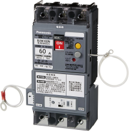

2022年
問題102 地震対策に関する次の記述のうち，最も不適当なものはどれか．
（1）ガス用マイコンメータは，地震発生時に自動的にガスを遮断するガスメータである．
（2）気象庁震度階級は，地震の揺れの強さを示す指標である．
（3）大規模事業所では，地震被害の軽減のため，防火管理者の選任が義務付けられている．
（4）感震ブレーカは，地震時に自動的に電気を遮断するブレーカである．
（5）Ｊアラートは，緊急の気象関係情報，有事関係情報を国から住民などへ伝達するシステムである．
2022年
問題102 正解（3） 頻出度AAA
「防火管理者」→「防災管理者」が正しい．
平成20年の消防法施行令の一部改正により，大規模事業所における自衛消防組織の設置及び防災管理者の選任等が定められ，従来の防火管理者と併せ防災管理が新たに義務付けられた．防火管理者が火災に対応するのに対し，防災管理者は火災以外の災害（地震と化学物質・細菌・放射性物質によるテロ）に対応することとされている（施行令第45条）．
-(1) 地震発生時（約250gal以上，震度5強以上）でガスを遮断する．
-(2) 震度階級は観測点における地震の強さを示す尺度で，人体感覚，構造物の被害，地盤の変形の状態を尺度化したものであり，地表による地面の揺れ方を表すために用いられる．わが国の気象庁震度階級は0，1，2，3，4，5弱，5強，6弱，6強，7の10階級である．一方地震の規模を表すのがマグニチュード（M）で，Mの数値が1上がると地震のエネルギーは約30倍になる．
2011年の東北大震災（東北地方太平洋沖地震）のマグニチュードは9.0，最大震度は7であった．
-(4) 感震ブレーカーは震度5強以上の地震を感知，分電盤の主幹ブレーカーを強制遮断して電源をストップする（2022-102-1図参照）．
2022-102-1図 感震ブレーカーの例

出典 Panasonic
https://news.panasonic.com/jp/press/jn210224-1
大地震時，発生した火災の60％以上が電気に起因するといわれている．
-(5) Ｊアラート（全国瞬時警報システム）は，総務省消防庁が整備を進める，緊急の気象関係情報，有事関係情報を国から住民等に伝達するシステムである．国民保護法に基づき「全国瞬時警報システム業務規程」により運用されている．